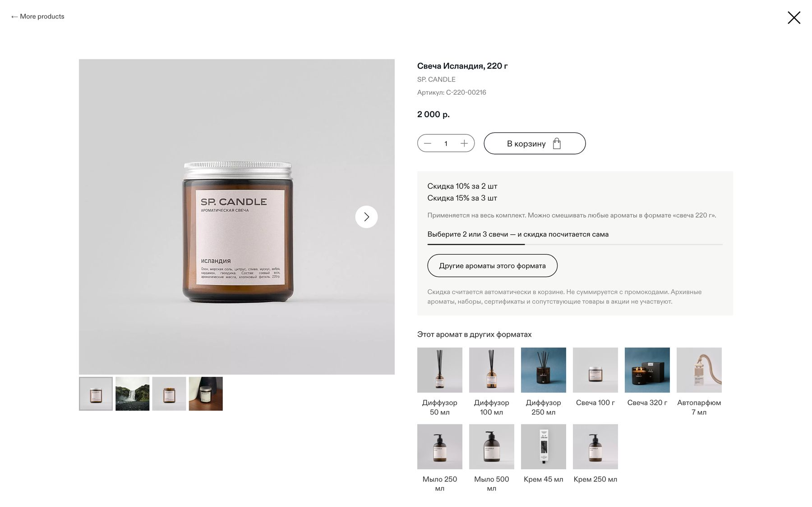
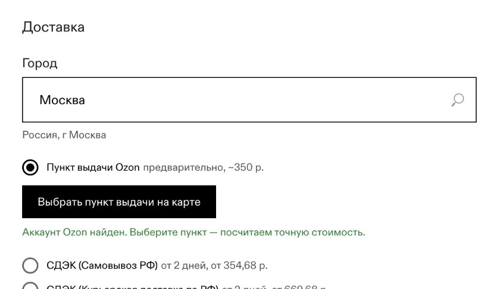
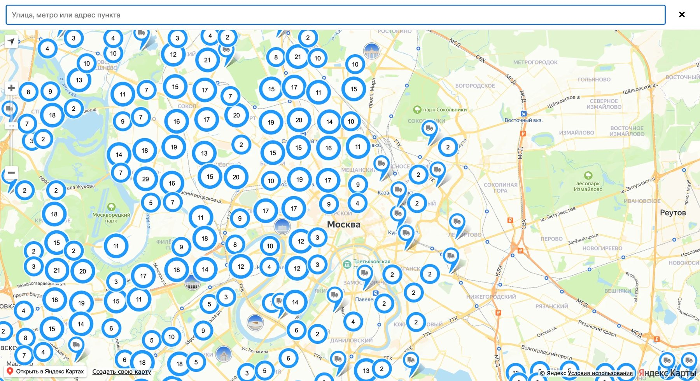

SP CANDLE — петербургский производитель свечей, диффузоров и автопарфюма. Интернет-магазин на Tilda, в каталоге почти 190 товаров. Доставки в пункты выдачи Ozon на сайте не было.
Расширить возможности магазина на Tilda и упростить оформление доставки: покупатель выбирает пункт выдачи Ozon, не уходя с сайта.
Собственная интеграция доставки Ozon в корзину — без стандартных модулей Ozon. Логика выбора и расчёта встроена в привычный путь покупки.
Новый способ доставки стал самым популярным в магазине.

Покупатель выбирает формат аромата и нажимает «В корзину».

В корзине выбирает «Пункт выдачи Ozon» — сразу видна предварительная стоимость.

Выбирает пункт на карте и сразу видит стоимость и срок доставки — заказ оформлен.